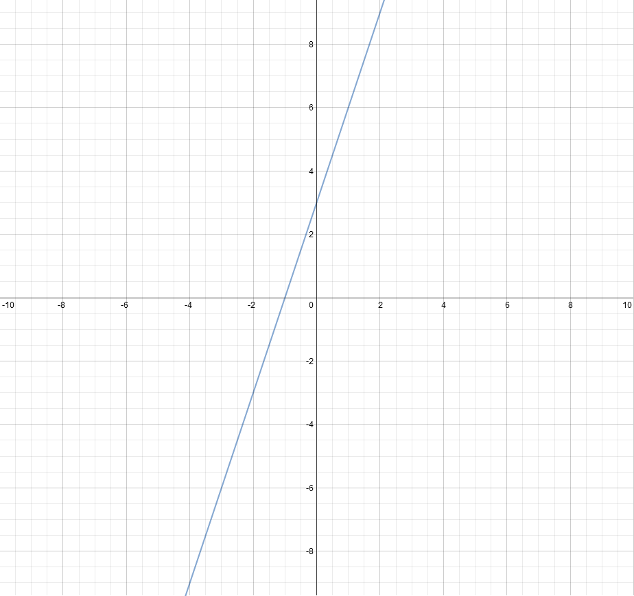

Să zicem că avem funcţia f(x) = 3x + 3 şi vrem să găsim acel x pentru care ecuaţia f(x) = 0 este adevărată, adică vrem să-i găsim rădăcina.
O primă metodă ar fi să alegem un interval unde credem că s-ar afla acest x, să luăm pe rând toate valorile din interval şi să vedem pentru care valoare f(x) = 0 este adevărată. Acest algoritm necesită O(n) timp de execuţie. Îl putem face şi mai rapid. Cum? Prin metoda bisecţiei.
Metoda bisecţiei constă în reducerea intervalului de căutare prin înjumătăţirea repetată şi selectarea subintervalului în care se găseşte rădăcina. Din acest motiv algoritmul este logaritmic O(log{n}). Algoritmul este similar cu căutarea binară.
Ca metoda să funcţioneze trebuie ca funcţia, căreia vrem să-i găsim rădăcina, să fie continuă.
Conform teoremei Cauchy-Bolzano (teorema valorii intermediare) dacă f (o funcţie oarecare) este continuă pe intervalul [a, b] şi f(a) şi f(b) au semne opuse, adică f(a) * f(b) < 0, atunci există o valoare c din intervalul (a, b) pentru care f(c) = 0.
Este evident, deoarece dacă la extremităţi funcţia are semne opuse atunci undeva graficul intersectează axa Ox. Graficul funcţiei f(x) = 3x + 3 este următorul:

Observaţi că intersectează axa Ox în punctul -1.
Pentru această funcţie voi alege intervalul [a, b] - a, b numere reale. Intervalul va fi împărţit în două subintervale: [a, c] şi [c, b], unde c = (a + b)/2. Căutarea rădăcinii se va face în subintervalul în care funcţia f(x) = 3x + 3 îşi schimbă semnul, astfel:
- Dacă f(a) * f(c) < 0, atunci căutarea continuă în intervalul [a, c];
- Altfel căutarea continuă în intervalul [c, b].
Procesul se termină atunci când se ajunge la intervalul [a, b] pentru care b-a < sigma, unde sigma este eroarea acceptată pentru o precizie de 5 zecimale şi are valoarea 0.00001. Nu uitaţi că calculele cu float şi double nu sunt foarte precise, de aceea trebuie să luăm în considerare o marjă de eroare.
#include <iostream>
using namespace std;
// Functia f
double f(double x)
{
return 3*x + 3;
}
double sigma = 0.00001;
// Metoda bisectiei
double getRoot(double a, double b)
{
double c;
if(b-a < sigma) return (a+b) / 2.0; // S-a gasit radacina, o returnez
else
{
c = (a+b) / 2.0;
if(f(a) * f(c) < 0) return getRoot(a, c);
else return getRoot(c, b);
}
}
int main()
{
// Se va afisa -0.999999 care este foarte aproape de -1
cout << getRoot(-10, 10);
system("PAUSE");
return 0;
}